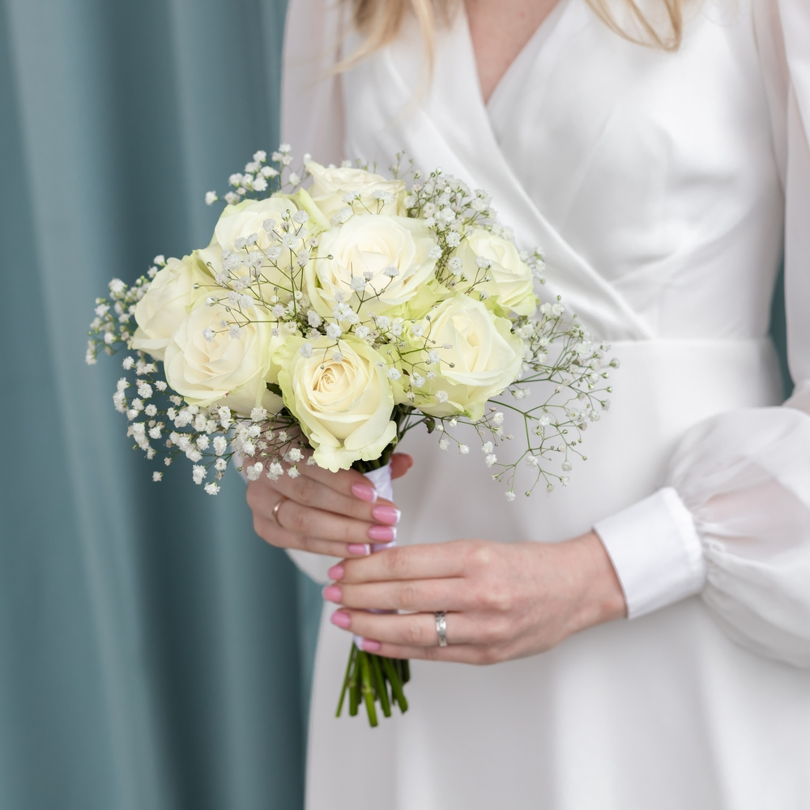
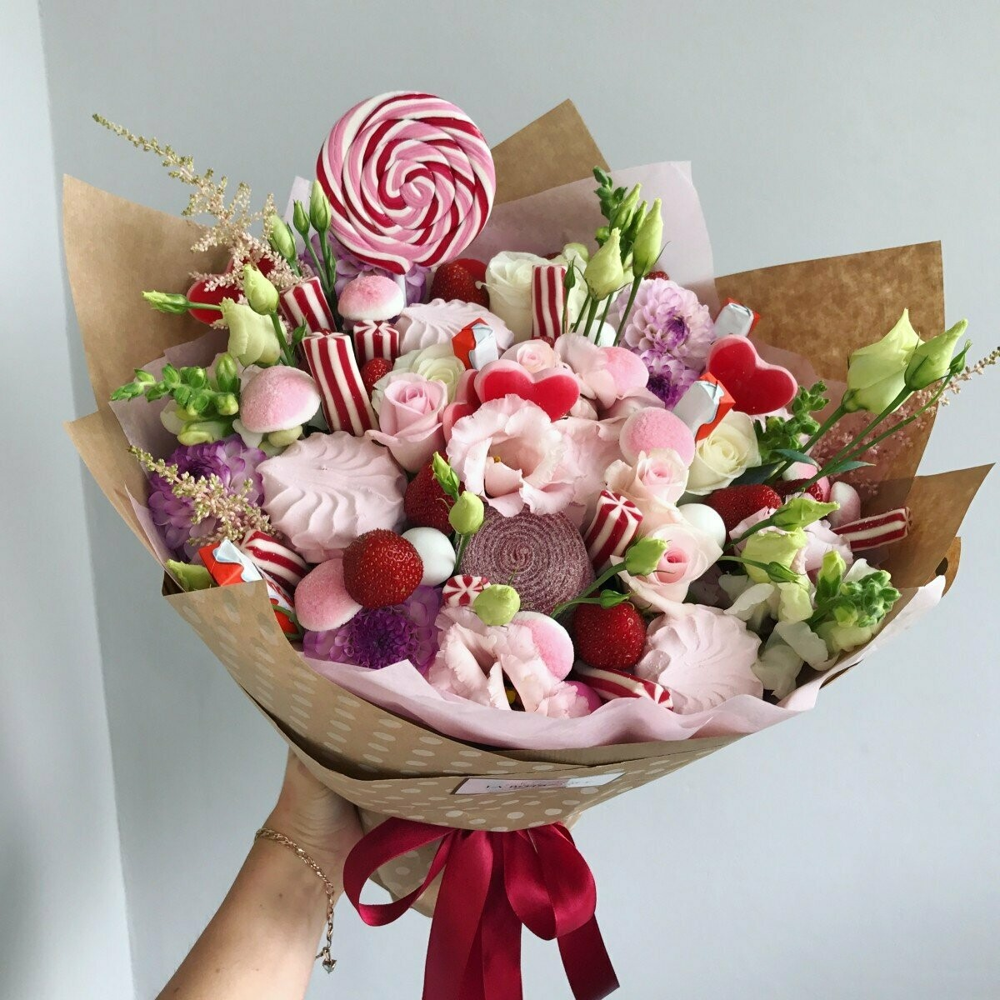
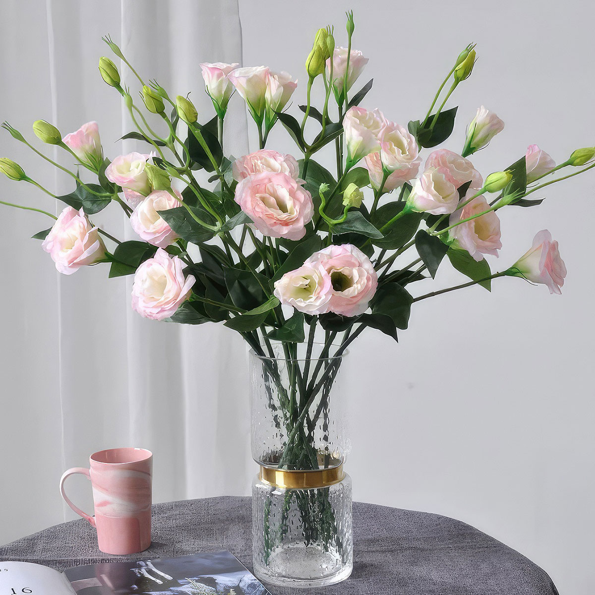

Погрузитесь в цветочный мир!
Для подробной информации необходимо нажать на изображение понравившегося цветка.
Советы по выбору цветов:
При выборе цветов для букета или подарка стоит учитывать несколько факторов:
- 1. Учитывайте предпочтения получателя: Какие цветы ему нравятся?
- 2. Подумайте о событии: Для свадьбы подойдут нежные пастельные тона, а для дня рождения - яркие и насыщенные цвета.
- 3. Обратите внимание на сезонность: Выбирайте цветы, которые доступны в данный момент, чтобы они были свежими.
- 4. Не забывайте о значении цветов: Каждый цветок и цвет могут иметь свое значение.
Интересные статьи
Как выбрать идеальный букет для свадьбы?
Свадьба - это особенное событие, и выбор букета играет важную роль. В этом посте мы расскажем, как выбрать идеальный букет для вашего важного дня.
Чем можно дополнить и украсить букет цветов?
Дополнение букета различными элементами может сделать его более уникальным и привлекательным. Вот несколько идей, как украсить ваш букет:
Вы можете добавить зелень, чтобы сделать букет более объемным. Используйте различные текстуры, такие как сухие цветы или декоративные элементы, чтобы создать интересный контраст. Также можно использовать ленты, чтобы связать стебли, или добавить маленькие подарки, такие как открытки или украшения, чтобы сделать букет более персонализированным.
Как ухаживать за цветами, чтобы они дольше радовали вас?
Уход за цветами - важный аспект, чтобы они долго оставались свежими. Мы поделимся с вами несколькими полезными советами.
Чтобы цветы дольше радовали вас, меняйте воду в вазе каждые два дня, подрезайте стебли под углом и убирайте листья, которые могут находиться в воде. Также стоит избегать прямых солнечных лучей и холодных сквозняков.
Создайте свой идеальный букет!
Используйте наш конструктор, чтобы создать уникальный букет, который идеально подойдет для любого случая.
Создать букет